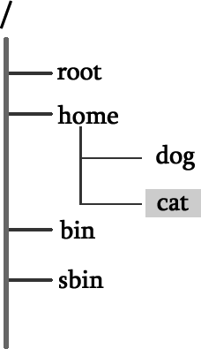
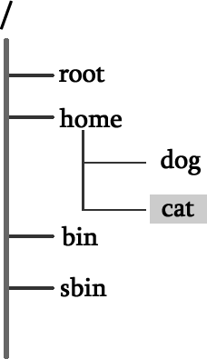

首页 > 编程笔记
Linux绝对路径和相对路径
Linux 系统中，文件是存放在目录中的，而目录又可以存放在其他的目录中，因此，用户（或程序）可以借助文件名和目录名，从文件树中的任何地方开始，搜寻并定位所需的目录或文件。
说明目录或文件名位置的方法有两种，分别使用绝对路径和相对路径。绝对路径指的是从根目录（/）开始写起的文件或目录名称，而相对路径则指的是相对于当前路径的写法。
换句话说，绝对路径必须以一个正斜线（/），也就是根目录开始，到查找对象（目录或文件）所必须经过的每个目录的名字，它是文件位置的完整路标，因此，在任何情况下都可以使用绝对路径找到所需的文件。例如：
而相对路径，就不是以正斜线开始，它是从当前所在目录开始，到查找对象（目录或文件）所必须经过的每一个目录的名字。例如：

图 1 绝对路径和相对路径
再举个例子，如图 1 所示，假设用户当前所在的目录是 cat，而此时要切换到 dog 目录。在这种情况下，切换路径有以下 2 种表达方式：
学完以上 2 种路径的表达方式后，读者可能会问，绝对路径和相对路径，应该如何选择呢？
假设你编写完成了一个软件，该软件的安装文件分为 3 个目录，分别是 etc、bin 和 man 目录。但是，由于不同的用户会将软件安装到不同的目录中，比如用户甲将软件安装到了 /usr/local/package 目录中，而用户乙将软件安装到 /home/packages 目录中。考虑到这种情况，如果软件中涉及使用路径调取资源，就只能使用相对路径。
此外，通常我们会将目录名写的很长，好让自己知道哪个目录是干什么的。例如，有一个目录的路径为 /cluster/raid/output/c.biancheng.net/cyuyan，同时还有一个目录的路径为 /cluster/raid/output/c.biancheng.net/python，此时如果要从第一个目录切换到第二个目录，虽然可以使用绝对路径，但明显使用相对路径更加方便，直接运行
需要注意的是，虽然绝对路径的写法相对比较麻烦，但可以肯定，这种写法绝对不会有问题，而使用相对路径，可能会由于程序运行的工作环境不同，导致产生一些问题。因此，选择使用绝对路径还是相对路径，要结合具体的实际情况。有时，只能使用相对路径；而更多时候两种方式都可以，可以根据自己的喜好选择。
说明目录或文件名位置的方法有两种，分别使用绝对路径和相对路径。绝对路径指的是从根目录（/）开始写起的文件或目录名称，而相对路径则指的是相对于当前路径的写法。
换句话说，绝对路径必须以一个正斜线（/），也就是根目录开始，到查找对象（目录或文件）所必须经过的每个目录的名字，它是文件位置的完整路标，因此，在任何情况下都可以使用绝对路径找到所需的文件。例如：
[root@localhost ~]# cd /usr/local/src
[root@localhost src]# cd /etc/rc.d/init.d
cd 是切换目录的命令，该命令的具体用法，会在后续章节中详细介绍。
而相对路径，就不是以正斜线开始，它是从当前所在目录开始，到查找对象（目录或文件）所必须经过的每一个目录的名字。例如：
[root@localhost /]# cd etc
#当前所在路径是/目录，而/目录下有etc目录，所以可以切换
[root@localhost etc]# cd etc
-bash:cd:etc/:没有那个文件或目录
#而同样的命令，由于当前所在目录改变了，所以就算是同一个命令也会报错，除非在/etc/目录中还有一个etc目录

图 1 绝对路径和相对路径
再举个例子，如图 1 所示，假设用户当前所在的目录是 cat，而此时要切换到 dog 目录。在这种情况下，切换路径有以下 2 种表达方式：
- 使用绝对路径，写法为：/home/dog，表示要切换的目录为根目录下 home 目录中的 dog 目录；
- 也可以使用相对路径，写法为：../dog，其中，.. 表示当前目录的父目录（home 目录），也就是说，相对于目前所在目录 cat，要切换到父目录 home下的 dog 目录。
学完以上 2 种路径的表达方式后，读者可能会问，绝对路径和相对路径，应该如何选择呢？
假设你编写完成了一个软件，该软件的安装文件分为 3 个目录，分别是 etc、bin 和 man 目录。但是，由于不同的用户会将软件安装到不同的目录中，比如用户甲将软件安装到了 /usr/local/package 目录中，而用户乙将软件安装到 /home/packages 目录中。考虑到这种情况，如果软件中涉及使用路径调取资源，就只能使用相对路径。
此外，通常我们会将目录名写的很长，好让自己知道哪个目录是干什么的。例如，有一个目录的路径为 /cluster/raid/output/c.biancheng.net/cyuyan，同时还有一个目录的路径为 /cluster/raid/output/c.biancheng.net/python，此时如果要从第一个目录切换到第二个目录，虽然可以使用绝对路径，但明显使用相对路径更加方便，直接运行
cd ../python 命令即可成功切换。需要注意的是，虽然绝对路径的写法相对比较麻烦，但可以肯定，这种写法绝对不会有问题，而使用相对路径，可能会由于程序运行的工作环境不同，导致产生一些问题。因此，选择使用绝对路径还是相对路径，要结合具体的实际情况。有时，只能使用相对路径；而更多时候两种方式都可以，可以根据自己的喜好选择。
关注公众号「站长严长生」，在手机上阅读所有教程，随时随地都能学习。内含一款搜索神器，免费下载全网书籍和视频。

微信扫码关注公众号